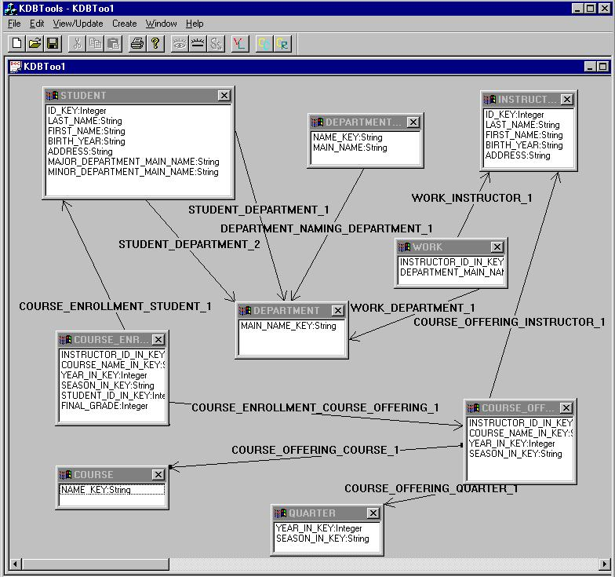

Part II : Reverse Engineering of Legacy Databases:
SemanticWrapper Knowledge Base Tool Demonstration
In this part of our presentation, we demonstrate Semantic
Wrapper, an open middleware system that provides semantic views of
legacy relational databases. We first show how to use our reverse engineering
tool, KDBTools, to load a relational schema from the relational database
into the knowledge base and to automatically create a semantic schema.
The DBA is then allowed to create a more complex semantic schema.
The following is the default semantic schema that KDBTools
created based on the relational schema of the underlying relational database,
a University database.
